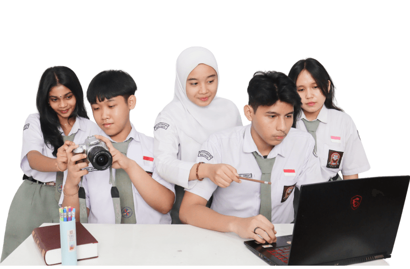
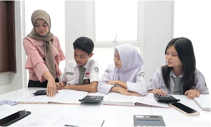
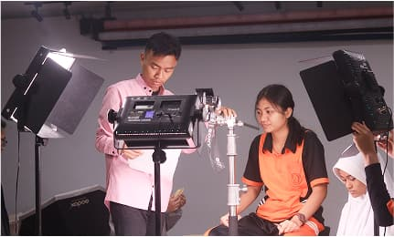
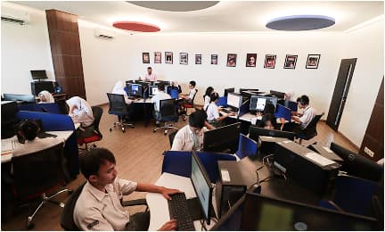

SMK Sultan Iskandar Muda
SMK Swasta Sultan Iskandar Muda sebagai sekolah vokasi unggulan membekali siswa dengan keterampilan praktis melalui Teaching Factory dan terus menjadi rujukan pendidikan yang relevan dengan dunia industri.

SMK Swasta Sultan Iskandar Muda sebagai sekolah vokasi unggulan membekali siswa dengan keterampilan praktis melalui Teaching Factory dan terus menjadi rujukan pendidikan yang relevan dengan dunia industri.

SMK Swasta Sultan Iskandar Muda menghasilkan lulusan yang memiliki Kompetensi Industri Berstandar Nasional dan Internasional, Berjiwa Kewirausahaan, Berkarakter Pancasila.


